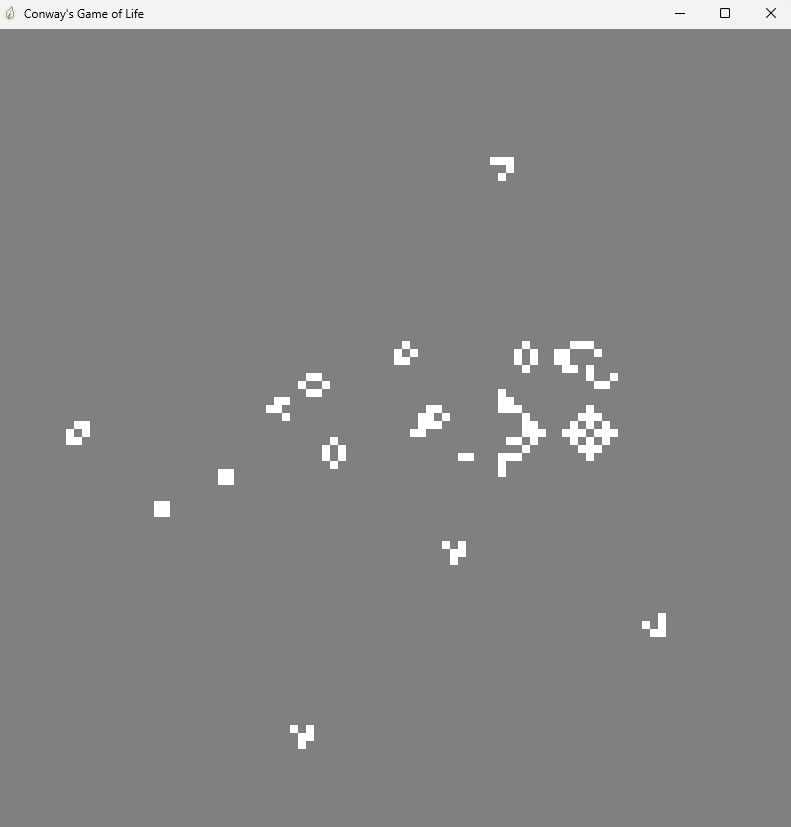

At the time of writing this, about 1.5 years ago, after my first contact with graphics programming, I started to learn about how a lot of the technologies in game engines work. I was always particularly interested in games. It's a form of art, just like music or movies, but a relatively new one. Therefore, there are a lot of things that are not yet fully understood about video games, such as the things they are best at communicating about. There is a lot of potential for someone to create something that taps into someting new and helps to investigate that question. The technical part of making games interests me just as much. It's the combination of these two fields that appeals to me. After these initial experiences, writing my own engine seemed like the next logical step. Not only would I learn a lot along the way, it would also allow me to explore some ideas that I might have.
Half a year before I started to work on my first engine, I got into Rust. All of the previous work that I had done in the same field was done in Rust. At the time, I thought that Rust did a lot of things right and that it would be a good choice. Now, after a lot of time and energy spent and learning experiences had, I am no longer using Rust for the majority of my projects. Part of the reason for that is that previously, I used something like C++ for work of similar kind (which is a language that I, similar to a lot of people, do not like at all) and I am now part of the Jai beta program, which means that virtually all of my language desires are fulfilled now and I can use it for all C-like systems programming tasks (which is almost everything that I work on anyways). The other reason is that, initially, I had no idea about what problems I would run into along the way of using Rust and that it is not really suited for game development for a variety of reasons. A lot of these reasons are actually widely known and other people have also written extensively about them. Sadly, I had to learn these things myself the hard way over the course of many many thousands of lines of code.
Exactly because other people have already written so much about the issues I am talking about, I will not just repeat what others have written. I will share my toughts about how I came to this conclusion, what I appreciated, what a resented, what mistakes I have made, and what problems are actually important to solve when working on games. I will also add some impressions about the work that I had been doing during that time. The engine I worked on quickly turned more and more into a playground for me to explore new ideas rather than anything to be seriously used in development. I only ever used it in a few small primitive examples to test features and mainly focussed on learning about new things and trying to implement and integrate them on my own. The pictures are just some random screenshots of some of the examples that I created to test said features. They don't really do justice to the amount of actual work that was put into that project, but I think they are still interesting.

I still use Rust for a lot of CLI tools where you have to do a lot of text processing that involves reading user input. I have written simple password and coupond code managers that way and its amazing how easy that is and how you can get something going in just a couple hundret lines, especially if you combine this with the fact that for everything you might want to do, there is probably some crate out there that does exactly that and is really easy to integrate using cargo. If you are just building some small toy project that you don't plan on shipping to a bunch of people reliably and you don't care about pulling in a ton of random dependencies, Rust is perfect for that. There is real criticism to be expressed about package managers in general, but if you want to use one, cargo is really good. Its ergonomics unbeatable.
The type system offers a lot of nice features that come from the functional programming world. Rust enums are a really good version of sum types that, combined with pattern matching, allow you to express a lot of things really nicely. Traits try to pull out the very few good things about OOP, make them better and package them into a concept that is ergonomic and powerful while being much simpler than comparable Modern C++ code (although that is not really an achievement and there is no shortage of ungodly complicated trait bounds in Rust). Even if it might come with a lot of downsides, Rust forces you to avoid a bunch of bad architecture practices that you might subconciously follow, especially if you are not that experienced yet, just as I was at the time. I think it's a net positive thing for someone with only a few years of experience in programming to use Rust for a substantial amount of time, even though you might not keep using it forever.
I don't like languages that tell me what to do, or that are so opinionated about programming practices that they think they know better than me. I have also spent a significant amout of time working with Zig at the time of writing this. Zig is another modern language that has this problem, even though the manifestations are different. These restrictions always are come with a bunch of additional friction during development. Making games is already hard enough and this factor can play the deciding roll in wether or not a project is successful. This is also a reason for why C++ is still so prevalent in the games industry. You can do things exactly the way you want and you can just ignore 90% of the feature set.
Even though Rust is a language with manual memory management, it does not want you to actually do that. It inherits a lot of these principles from Modern C++ OOP style about private data and RAII, event though Rust people claim that the language is not really object oriented. People are pushed to think about their program as a set of disjoint objects that float in the vast space of the heap and manage their own memory - almost like islands in a big ocean. If you want to access struct fields, they have to explicitely be declared as public. Data access and memory management is deemed dangerous and error-prone; the propaganda is that this solution is not only fine but actually something to strive towards. You should not concern yourself with these things, because they limit your freedom of expressing ideas in your programs. Hiding behavior and implementation details is supposedly really good. The way API design is approached reflects this; the users of your API should be protected from potential missuse. Of course they can not just think for themselves and read the code to see what it does, that would be tedious and annoying. That whole approach has a bunch of implications about performance, design and memory fragmentation that I don't want to get into, I'll just say that I think that this way of thinking is a self-fulfilling prophecy. These practices are solutions for problems that only exist because you follow these practices. I think that private data is mostly an anti-pattern, the code just has to be sufficiently documented or understandable. The user of your API should not be treated like they are stupid. Eventually, there will come a time where you will need access to some "private" data and it won't be straight-forwardly possible.
In fact, it is entirely possible to reasonably manage memory manually. Especially when making games, custom allocators are a must. Another friction point of Rust is the poor custom allocator support. At the time of writing this, Rust's allocator API feature is still unstable, and you have to rely on third party crates to somehow use the containers of the standard library with a custom allocator. The fact that custom allocators are not a central focal point of the language design is very telling. Rust also encourages a declarative-style-heavy programming style with a lot of method chaining and iterators. Using a debugger is incredibly important for everyone who works on games and these multi-line declarative statements that perform a great amount of data transformations at once are really terrible to debug and step through. That is another friction point.
The famous borrow checker is another source of friction - and not a small one. Every programming problem inherently has a certain characteristic amount of global state. Games, just by their very nature have a very high amount of global state with different parts that all interact in multi-directional ways. The question is, how do you manage that? Different programming paradigms have different answers to that question. Rust's borrow checker prohibits a lot of things you would be naturally inclined to do in this situation. You end up architecting you program around these restrictions, even though the potential benefits are not hat high, because most game code is going to be single-threaded. Sure, there are a lot of things that run in parallel in games, graphics probably being the most important part, but all of them do not really have that much to do with the global game state management I am talking about. Of course you can just pass all of your stuff down the callstack, but that is just messy. Also, contextual parameters like that suffer from the restrictions on reference lifetimes, that make things even more messy or even impossible. Rust people would argue that that means that your architecture is wrong, and while that might be true in some cases, iteration speed is a real concern. Sometimes you just want to work on some part while leaving the other parts in a temporarily incomplete state.
Memory safety is also not a really big problem compared to all the things you have to deal with when making games (at least if using your own memory allocators was not so difficult). All the restrictions of memory management and ownership feel a bit like Stockholm Syndrome to me. If you have bought in to the entire cluster of ideas and beliefs around these language design decisions, you gaslight yourself into believing that the supposed benefits are actually really worth the trouble, even though deep down you know that a lot of this is a bit silly. The way you architect your code might not even be inherently safer to begin with. On a very simple level: you might just be using indices instead of pointers, but that is just a way of tricking the borrow checker because it doesn't understand that you just created a custom memory allocator.
Another issue is that when trying to follow the prescriptions I gave earlier and actually read the code of some larger project, a lot of times it is almost impossible to find out where the actual code is that does the thing the project is about. This is not strictly a Rust issue, not even really a language issue, but more of an issue of a lot of modern software in general, but I want to highlight it still, because I think that these tendencies get amplified by the the design decisions that Rust has made. The code is so unlocalized and so many layers are stacked upon layers, all of that hidden in a maze of type system syntax, that you just don't know where the thing is that does the thing. You can spend hours trying to navigate a big codebase trying to find the part of the code that actually does the thing you care about and not get anywhere. At one time, I translated a public project from Rust to Jai, and I turned 1400 lines into 600 lines just because I reduced the formatting, wrapping and redundant comments. I just made the thing that did the thing.
Some of the mistakes I made are not directly my responsibility, they just arise naturally from the way of thinking you develop by using Rust. They are not necessarily purely bad, they just shift your focus away from actually working on the problems you care about.


At all times, there was this urge in me to try to design a system that would produce exactly the desired output based on the most minimal set of input parameters. I think that is an urge that every programmer knows and has to fight every now and then because it is based on an illusion. It is the illusion that this is actually possible. Every program is defined by a specific set of precise instructions that determine its behavior. The length of the latter of abstraction you can (and should) climb is limited. There is real loss of information. Shure - the set of primtive operations you want might be more high-level than the most basic primitive operations, but at some point you lose control over the behavior of the program as a result of the information loss in the abstraction process. In my case, I almost turned this effectively into a compression problem, almost like program synthesis; by specifying a small set of entity data specifications, the resulting behavior was supposed to be produced automatically, and all possible edge cases should be accounted for. If there is something that in theory COULD be derived from said small set of input parameters, it should be done. That is a bad idea. For all of this to be working, there is a non-trivial cost that you pay in terms of performance, code complexity and iteration speed. I effectively tried to use my engine to eliminate the need for a lot of potential programming work in advance. However, games have to be very specific in what they do. They are only interesting when someone was very precise in their design and engineering work. Generalized systems do not produce these results, unless there is enough room for intervention to allow for these edge cases to be handled manually, in which case the system should not be general in the first place. Active intent by the programmer is always superior to plugging in some variables into some predefined interface (in a simplified sense). This illusion I talked about is the same illusion that people who think that AI will replace programming as we know it have. The use of natural language to prompt an LLM is also a form of abstraction. If you are working on something interesting, meaningful and non-trivial, you will need to very precise in your specification of the thing you are trying to build. Natural language is not very good at that. It would be better if you had a very precise and concise way of specifying how a program should behave... oh no, we just reinvented programming languages.
What ends up happening is that you spend an immense amount of time and energy on trying to make such a system work, only to eventually realize that you don't need half of it and you have not gotten closer to your actual goal in any meaningful way. For me, what ended up happening is that, even though I learned a lot, there are a lot of architectual quirks that make the engine unergonomic to use in some respects. There are also a lot of bugs and inefficiencies that I found after some time had passed and I worked on other projects. Since, I have significantly improved as a programmer and this baggage regarding bad design choices is not easy to get rid of. I am still young, so I guess that is a good thing. Still, this project really opened my eyes to the fact that you can really create something meaningful if they just keep working on something rigorously for long enough - and that is a good thing. If you are still interested in taking a look at the code despite its lack of relevance for my current work and the quality problems I talked about, you can take a look at the repository.
The things I worked on include: